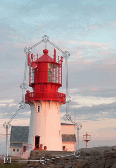
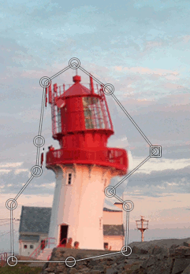

The Cage tool is a special transforming tool allowing you to select the transforming area by setting anchor points by free hand drawing similar to the way you do it with the Free Select tool. The tool adds nothing to the image until you confirm the transformation by pressing the Enter key.
There are different possibilities to activate the tool:
-
From the main menu: → → .
-
By clicking the tool icon in the Toolbox.
-
By pressing the Shift+G keyboard shortcut.

Normally, tool options are displayed in a window attached under the Toolbox as soon as you activate a tool. If they are not, you can access them from the main menu through → → which opens the option window of the selected tool.
- Create or adjust the cage
-
When activating the Cage Tool this option is selected. You can now click in the image to make anchor points around the desired area. If you need to add anchor points at a later stage, you click on this option.
- Deform the cage to deform the image
-
GIMP switch to this option automatically when the cage outline is finished. Now you are able to drag the anchor points around in the image and even outside it to transform the picture. The transforming starts when you release the mouse button.
You can activate more than one anchor point by holding down the Shift key while clicking on the points. You can also select more points by holding down the mouse button while drawing a rectangle around the desired points.
- Fill the original position of the cage with a color
-
If the transforming action results in empty areas these areas will be filled with color if this option is checked. It looks like the color is picked from the start pixel of the cage line.
Figure 14.128. Cage Transform Tool example


When clicking on the cage icon in the toolbox the cage option is set to “Create or adjust the cage”. You are now able to draw a cage outline in the image by successively clicking around the area you want to transform. Click on the starting point to finish the selection. GIMP will then do some mathematics and activate the “Deform the cage to deform the image” to allow you to drag the points on the line to deform the cage and the image.
The selected point(s) turns to a square. Drag the points around in the image to transform it. The transforming will occur every time you release the press on the mouse button. The transforming may take some time so be patient especially when working with large images.
If you desire to add more points to the line you have to select the “Create or adjust the cage” in the tool options dialog. Put the points on the line and switch back to the “Deform the cage to deform the image” to transform the image or layer.
When the work is done, press the Enter key to confirm it.